Review · Round 5 · the pilot
Chapter 5: The Hydrogen Wall, the storyboard
A board for each of the chapter's 39 shots, laid over its sound: the cast's voices as voiced in Round 3, with the holds the pictures need, the theme's first phrase at the head, and the effects under the voice (9:03 in all). Each board is a still from the blocking pass of the scene, so it shows each shot's key pose and its event but not yet its motion. Play it through, or click any shot below to start there. The questions are in the decision sheet.
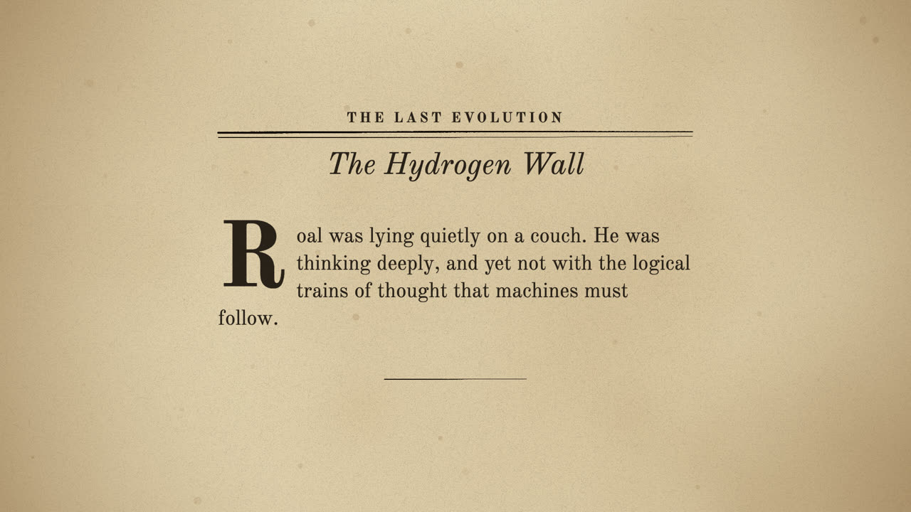
The chapter
- logline
- An old man dreams his way to the wall inside the hydrogen atom; a new machine follows him through it, and builds a thing that kills its own maker, then a ruler, then the green beam the Outsiders use: from human dreaming to machine making, in one night.
- world
- The Denver laboratory at night: a hall of fluted piers and a wall of screens, lit low; the floor where the machines are built. Inside Roal's head, a pulp science plate: ink diagrams on dark paper. The last shot goes outside, to the bare rock under a dawn sky.
- colour
- Grey wash for the hall. The only colour is energy (PLAN.md §5): the radiation's white flashes in Roal's atom; F-1's force shafts and arcs in blue-white, and the white-hot metal; the birth's white aura and blue lightning, the chapter's brightest; F-2's white disintegrating stream; C-R-U-1's dull gold; and last the death beam's pale green, its first appearance in the film. The bare rock at dawn is the coldest, emptiest grey.
- motif
- The wall. Roal's electron falls ring by ring and stops at a ring it can't cross; F-1's ruled logic climbs in steps to a gap it can't cross either. F-2 is born inside a wall of white light, and comes out held on its own power. Thought is drawn two ways throughout: Roal's as loose, curling wash; the machines' as ruled, straight ink.
- arc
- Stillness to speed. It opens on a man lying still, thinking, and ends on thousands of machines rising in hours. Roal goes from dreaming to awe (his arm up against the light, as in Morey's page) to a quiet question; the machines go from following him to not needing him.

The shots
A The chapter's page 0:00–0:10 · 9.6 s
infade up from bare paper
seenThe pulp page: THE LAST EVOLUTION over its double rule, the italic title The Hydrogen Wall, and the opening paragraph under a drop cap.
eventThe theme's first phrase plays; the narrator begins reading the page aloud.
cameraa slow push toward the paragraph
reads
- at once: the page and its title
- with the voice: the voice reading the words on the page
outthe page's paper soaks dark with wash and becomes the hall
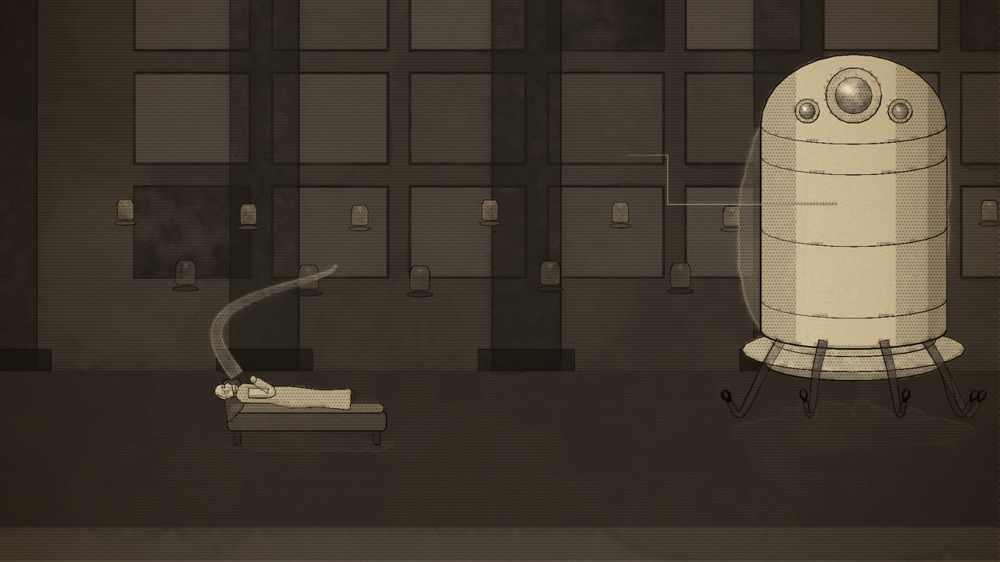
B The hall at night 0:10–0:18 · 7.9 s
seenThe laboratory, wide and low-lit. Roal lies on a couch at the left of the floor, an arm across his chest. F-1, the shining cylinder, floats motionless at the right, taller than the piers' lower half. Tiers of dim science-machines behind.
eventRoal's thought rises from him as a loose curl of pale wash; a ruled ink line from F-1's lens starts after it.
cameradrifts left toward Roal
reads
- at once: the hall; the man on the couch
- "not with": his thought
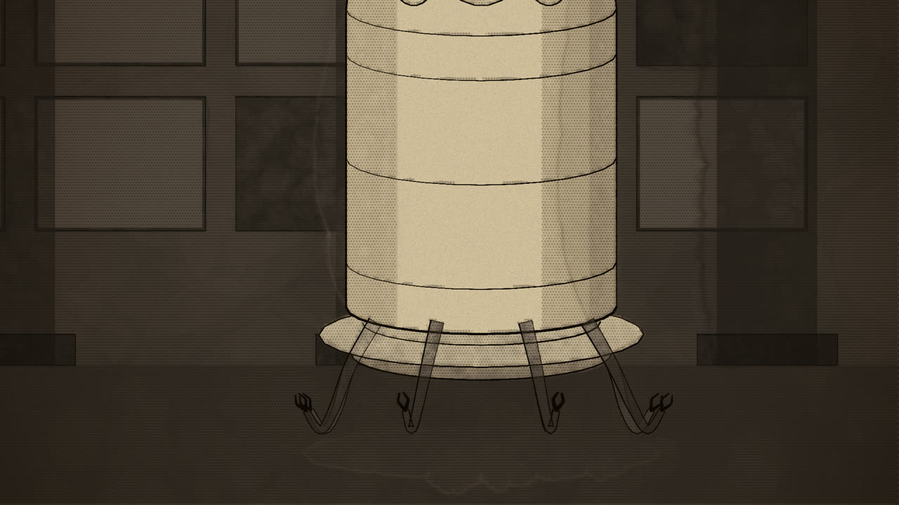
C F-1 speaks 0:18–0:25 · 7.2 s
seenF-1 from low by the couch, vast; its great lens and the two small ones.
eventThe great lens brightens with the words and turns down toward the couch.
cameraa slow tilt up its height
reads
- at once: F-1
- with the line: "the new machine": the lens turning to us
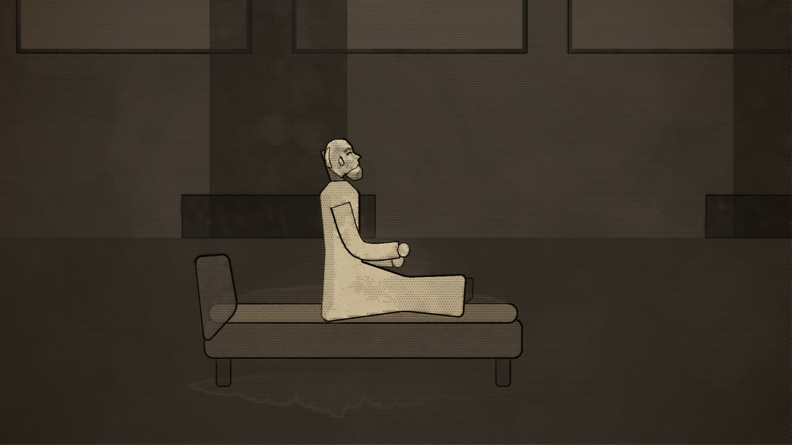
D Roal sits up 0:25–0:31 · 6.4 s
seenRoal on the couch, in profile, facing right.
eventHe swings up to sit, looks up at the machine, and smiles.
camerasteady, a little push on his line
reads
- at once: Roal sits up (anticipation
- with the line: his face up to F-1
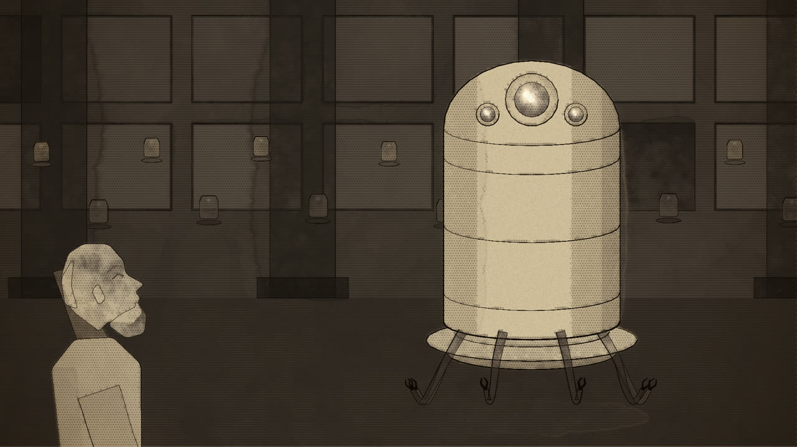
E F-1 has followed him 0:31–0:45 · 14.2 s
seenOver Roal's shoulder (his head and collar dark in the foreground, left); F-1 beyond.
eventF-1 drifts nearer and lowers itself to his level as it speaks; its tentacles stir; it stops, waiting.
camerasteady
reads
- at once: the machine coming down to the man
- "What is your thought": it waits
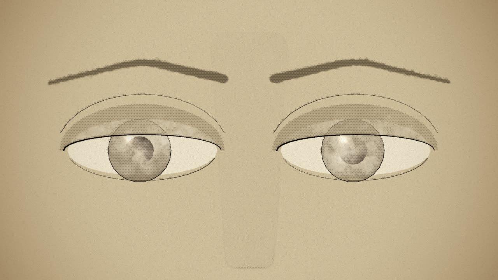
F Roal's eyes 0:45–0:52 · 6.8 s
seenRoal's eyes, very close; the brows and lids of a hundred and fifty years.
eventHis gaze goes far off and soft.
camerastill, a slow push
reads
- at once: his eyes
outmatch cut, his pupil to F-1's lens
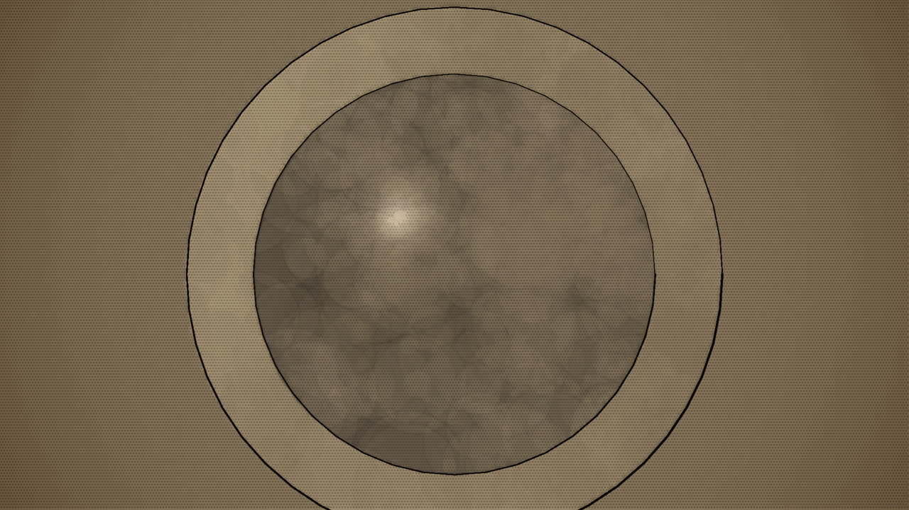
G The lens 0:52–0:56 · 4.1 s
seenF-1's great lens, as close; polished, blank, the hall reflected in it, small.
eventNothing moves in it. That's the read.
camerastill
reads
- at once: the same circle
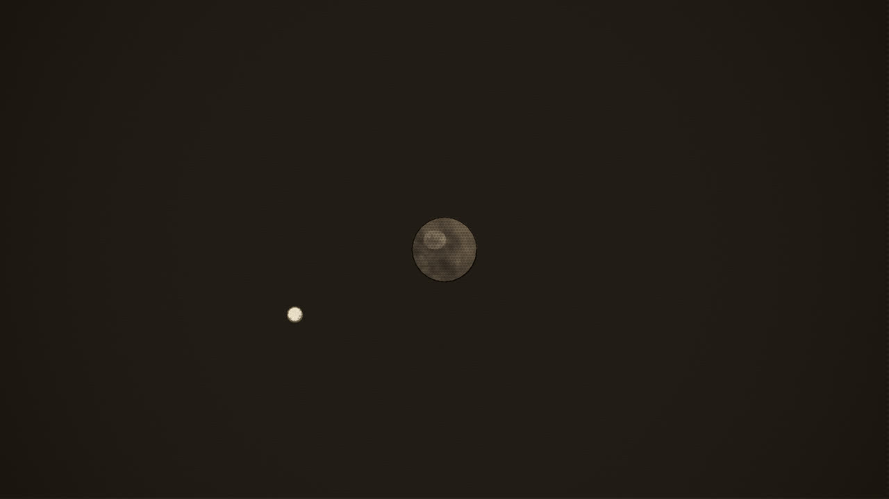
H Into the atom 0:56–1:08 · 11.3 s
seenRoal seated, looking up into the dark above the hall. The dark above him deepens and a point of light appears.
eventThe hall falls away into a field of dark wash; the point becomes an atom.
cameratilts up with his gaze, past him into the dark
reads
- at once: Roal looking up
- "but a single proton": the proton
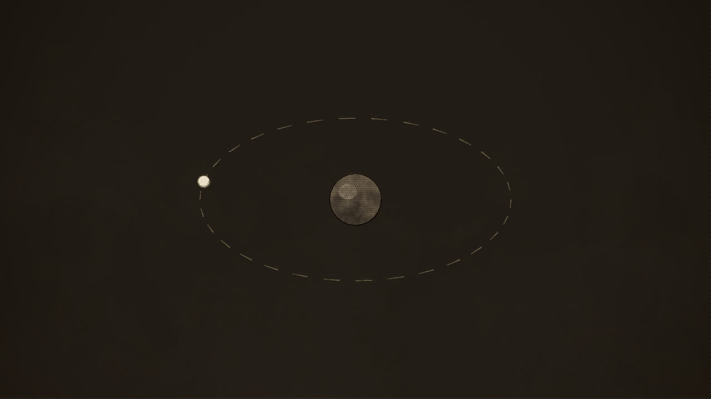
I The plate of the atom 1:08–1:11 · 3.0 s
seenA pulp science plate on dark paper: the proton, a dark ink sphere; the electron, a small pale one, on a wide orbit drawn as a dotted ellipse.
eventThe electron circles, never touching.
camerastill
reads
- at once: the electron circling the proton
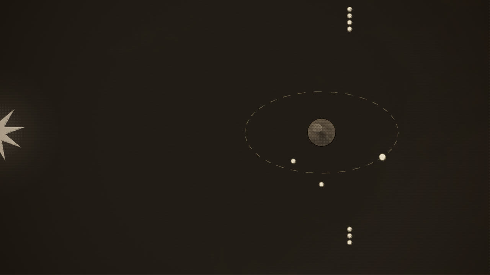
J The bombardment 1:11–1:24 · 13.5 s
seenAt the left, an atom bursts in white light; a spray of electrons flies at the hydrogen atom.
eventEvery one swerves or glances off before it reaches the proton.
cameraa quick pan from the burst to the atom
reads
- at once: the burst
- "never do they reach": the swerve; none touches
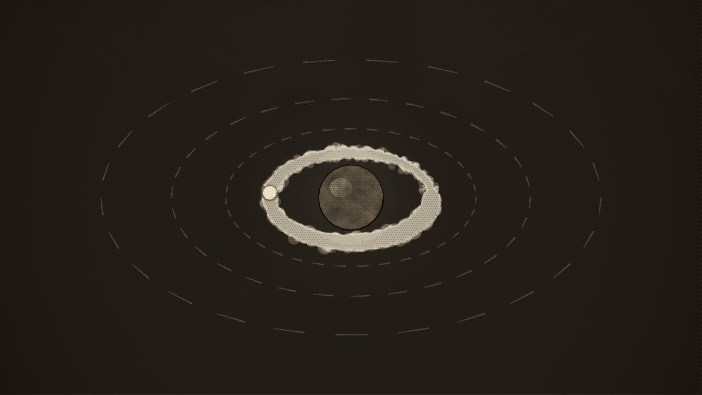
K Falling in 1:24–2:02 · 37.9 s
seenNested orbits drawn in ink around the proton, the electron on the outermost.
eventAt each "flash" the electron drops one ring inward and a ring of white light leaves it; "always falling nearer"; then at "Blocked" it stops dead at the innermost ring, and that ring is drawn darker: the wall.
camerapushes in ring by ring
reads
- at once: the electron attracted
- "there goes a flash": the first drop and its flash
- "Another flash": the second
- "Blocked": it stops; the wall
- "What is that wall": the wall held
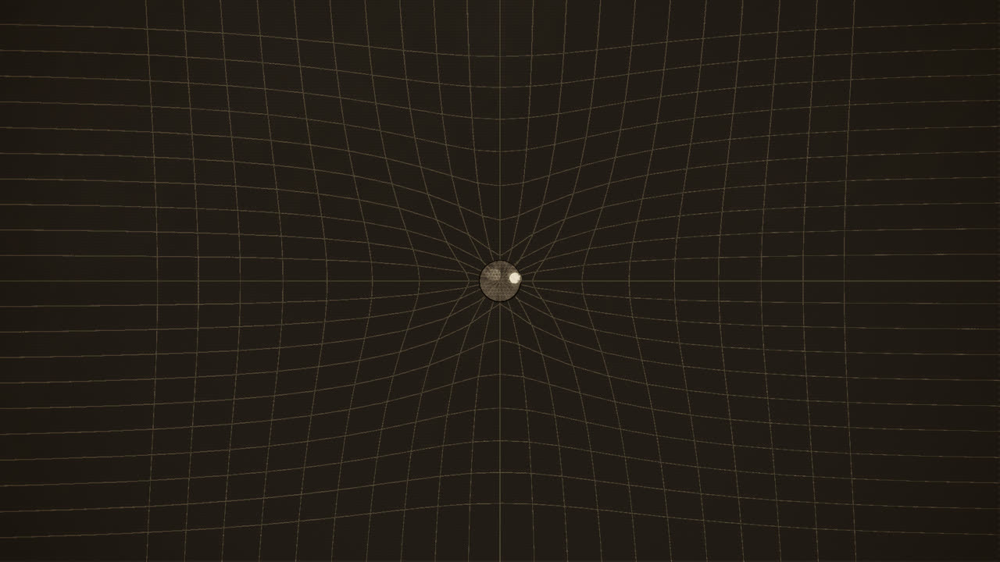
L Space curves 2:02–2:22 · 20.0 s
seenA flat grid of ruled ink lines across the dark, the proton at its centre.
eventAs the electron nears, the grid's lines bend toward the centre, more and more; at "beyond all bounds" the centre folds shut to a point, and through it shows a faint white glow: a new space.
camerastill, then a slow push into the point
reads
- at once: the grid; the force bending it
- "Perhaps": the electron passing the wall
- "and are in a new space": the fold and the glow beyond
outthe glow fills the frame and becomes Roal's face
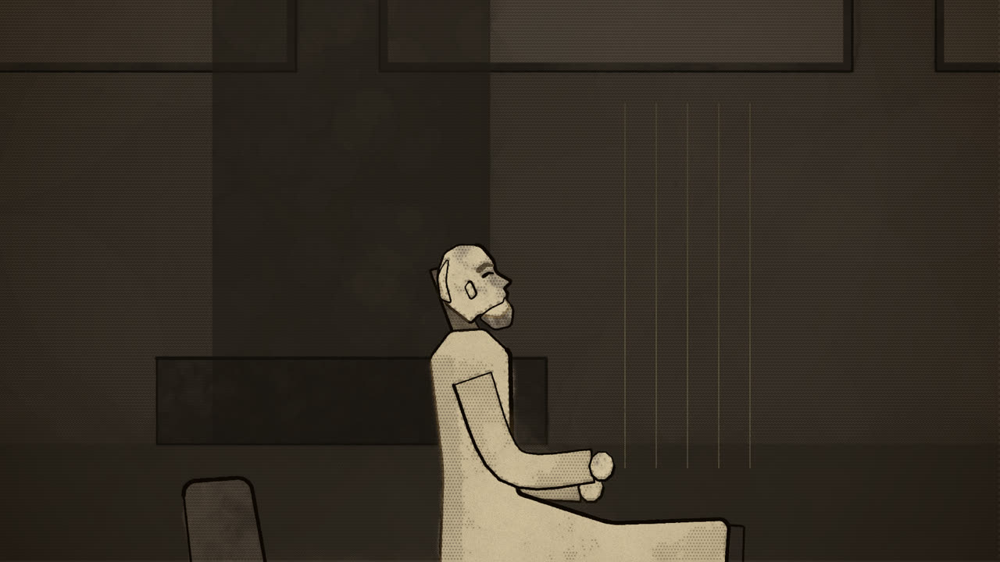
M His voice drops 2:22–2:30 · 7.8 s
seenRoal's face, three-quarters, the last of the plate's lines fading in front of it.
eventHis lips close; his eyes go on dreaming.
camerastill
reads
- at once: the old man's face
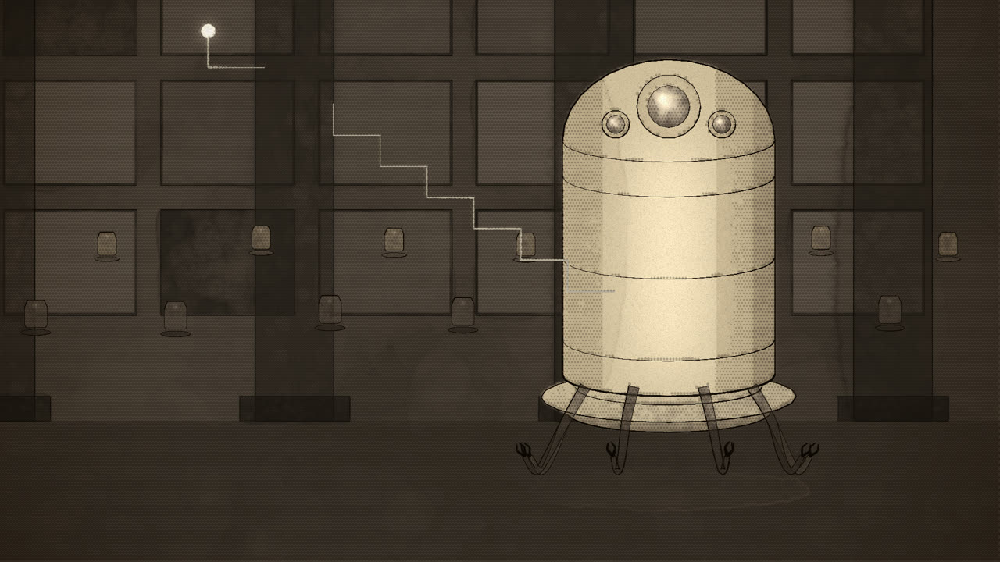
N F-1 hums 2:30–2:44 · 14.2 s
seenF-1 in the hall, its bands faintly lit, humming.
event"Far ahead of us there is a step": ruled ink steps climb up from its lens and stop at a gap; then "working backwards" a line comes down from the far side and the gap closes.
camerasteady
reads
- at once: F-1 humming
- with the line: the steps climbing to the gap
- "working backwards": the line coming back; the gap closes
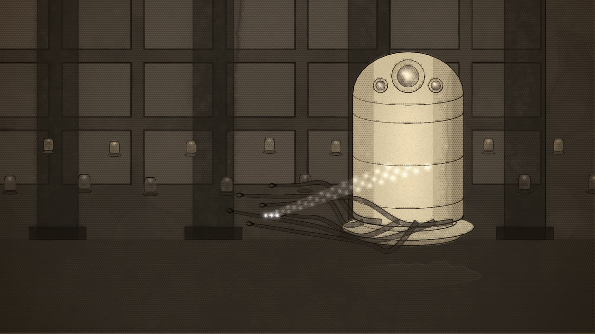
O Force shafts 2:44–3:00 · 16.2 s
seenF-1, wide, on its anti-gravity drive, still.
event"Suddenly": force shafts gleam out of it in blue-white, down to a point on the floor; its tentacles come alive and weave around that point, smeared with speed.
camerastill, then a hit of shake at "Suddenly"
reads
- at once: F-1 still
- "Suddenly": the shafts
- "tentacles became": the tentacles writhing
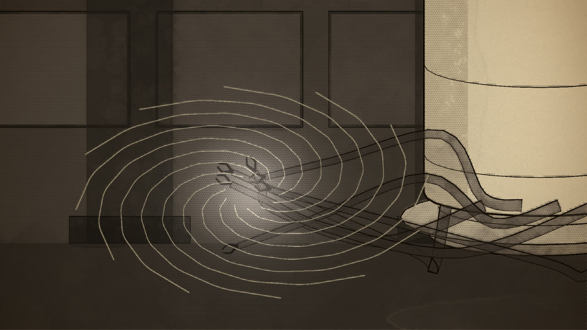
P The transmutation field 3:00–3:22 · 22.0 s
seenClose on the working point: air pulled in spirals into a glowing field, the tentacles a blur around it.
eventFierce beams push at something taking shape in the glow; F-1's bands pulse brighter and dimmer as its generators wax and wane.
cameraa slow push into the field
reads
- at once: the air spiralling in
- "Fierce beams": the something taking shape
- "waxed and waned": the pulse of the generators
outbrush wipe (the story's scene break)
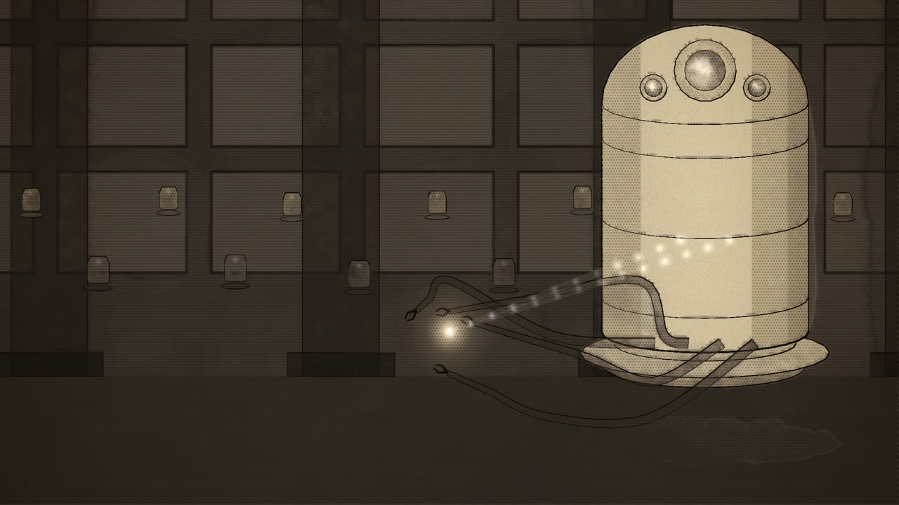
Q A weird symphony 3:22–3:51 · 28.9 s
seenThe hall in darkness, struck into light and back by arcs and flame.
eventArcs crack across the floor in blue-white; white-hot metal glows in the beams; each flash shows the hall, then takes it away: "light and dark, sound and quiet".
camerasteady, small shakes on the arcs
reads
- at once: the flashes
- "glimpses of white-hot metal": the white-hot metal held in beams
- "All combined": light and dark in rhythm
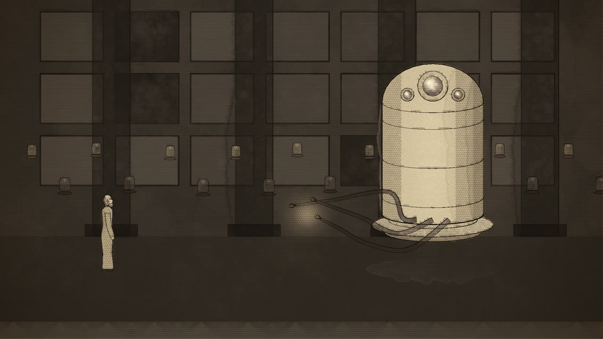
R The tiers 3:51–3:58 · 6.9 s
seenWide: the floating tiers of science-machines in a ring around F-1, their lenses lit by the flashes. Roal small at the bottom left, standing now.
eventThe machines don't move. They watch.
cameraa slow pull back
reads
- at once: the ring of watchers
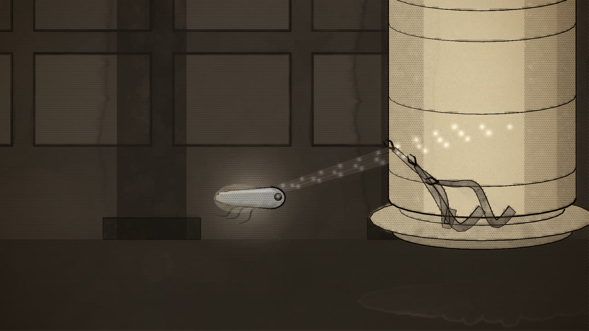
S The thing revealed 3:58–4:13 · 14.7 s
seenClose on the working point. The tentacles writhe once more, straighten and roll back.
eventThe whine softens; three beams of force hold a structure of glowing, bluish metal: F-2, unfinished, then whole.
camerasteady
reads
- at once: the tentacles rolling back
- "but three beams": the three beams and what they hold
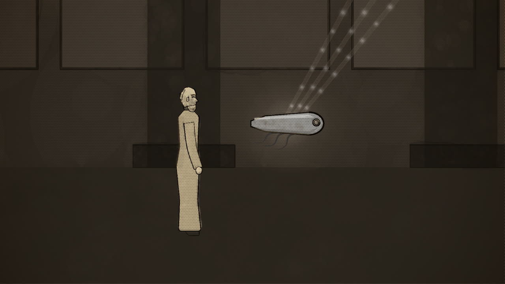
T Half the size of Roal 4:13–4:23 · 9.8 s
seenRoal standing, in profile, beside the small torpedo held in its three beams.
eventHe looks at it; it's scarcely half his height. Its three thin tentacles uncurl.
camerasteady
reads
- at once: the scale; the man and the made thing
- "From it curled": its tentacles
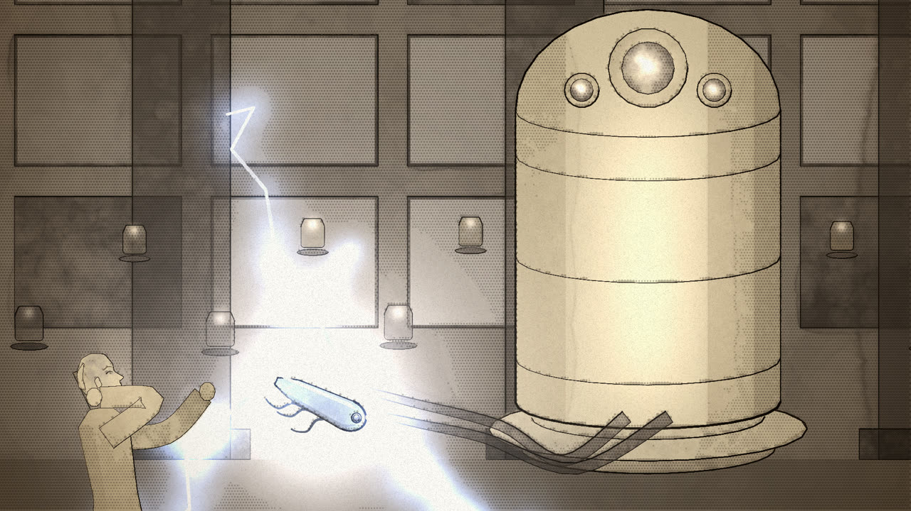
U The birth 4:23–4:36 · 13.6 s
seenLow, looking up: F-1 towering, a tentacle holding the newborn in an enormous aura of white light shot through with blue lightning; Roal at the left, his arm thrown up across his face. Our painting of Morey's moment.
eventThe generators roar; the aura blooms; lightning crackles out of it.
cameraa push up toward the aura, then the dissolve
reads
- at once: the roar and the aura
- "shot through": the blue lightning; the man shielding his face
outdissolve into Morey's page
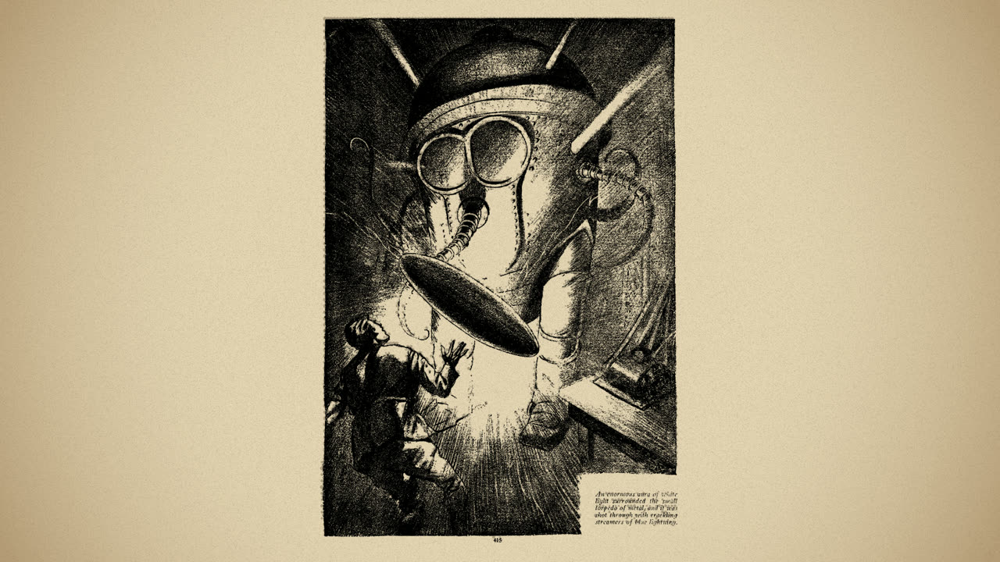
V Morey's page 4:36–4:41 · 4.8 s
seenLeo Morey's illustration from the August 1932 issue, page 415, whole, on its yellowed paper. Its caption is the sentence just spoken.
eventThe page holds while the caption's words are still in the air, then dissolves back into the hall.
cameraa very slow push
reads
- at once: the page; the caption
outdissolve back into our painting
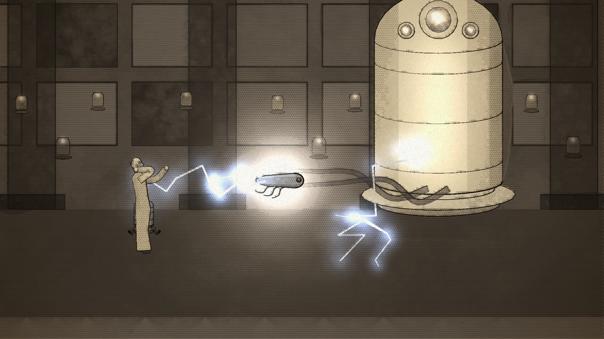
W Lightning 4:41–4:48 · 7.1 s
seenThe hall in the birth's light. Lightning strikes the floor near F-1, then a science-machine that has drifted close.
eventThe struck machine flares and slumps.
camerashakes with each strike
reads
- at once: lightning to the floor
- "to one machine": the machine struck
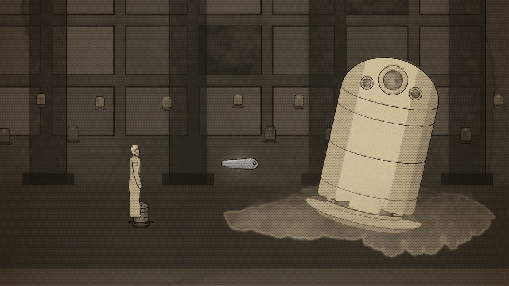
X F-1 falls 4:48–5:03 · 14.7 s
seenF-1 and the struck machine, mid-hall; the aura gone small and steady.
eventThe snap: F-1's lenses go dark, it drops heavily to the floor, and the fused mass of metal falls beside it. The shake, the dust, and stillness.
cameraa jolt on the fall, then still
reads
- at once: the snap; the light going out of F-1
- "fell heavily": the fall
- at the line's end: stillness
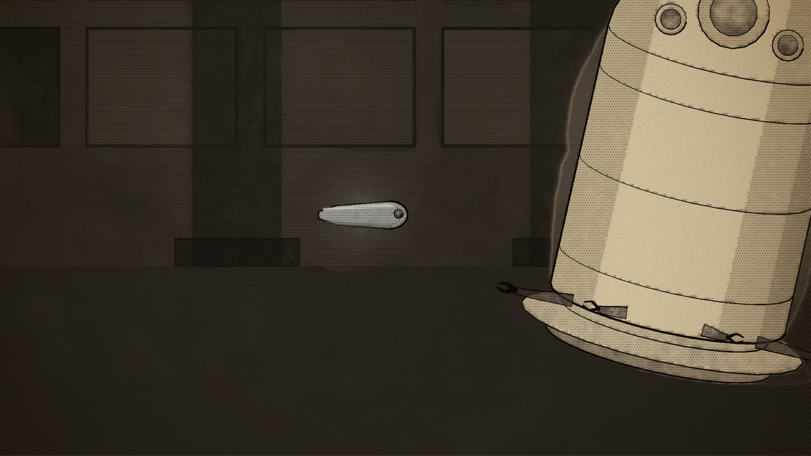
Y Held on its own power 5:03–5:11 · 8.5 s
seenThe small torpedo alone in the dim hall, the three beams gone, F-1's hulk on the floor below it.
eventIt stays up, bobbing gently; its own faint glow.
cameraa slow push in
reads
- at once: it floats on its own
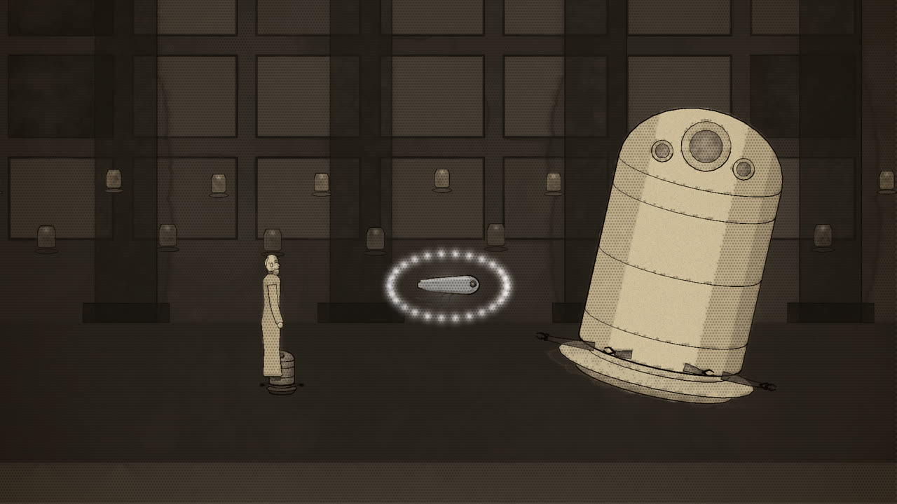
Z Waves of thought 5:11–5:32 · 20.9 s
seenF-2 in the middle of the hall, Roal and the machines around it at a distance.
eventRings of thought go out from F-2 across the man and the machines; with "See." it turns toward F-1's fallen hulk.
camerasteady, wide
reads
- at once: the rings reaching everyone
- "It is not worth it": the verdict; it turns to F-1
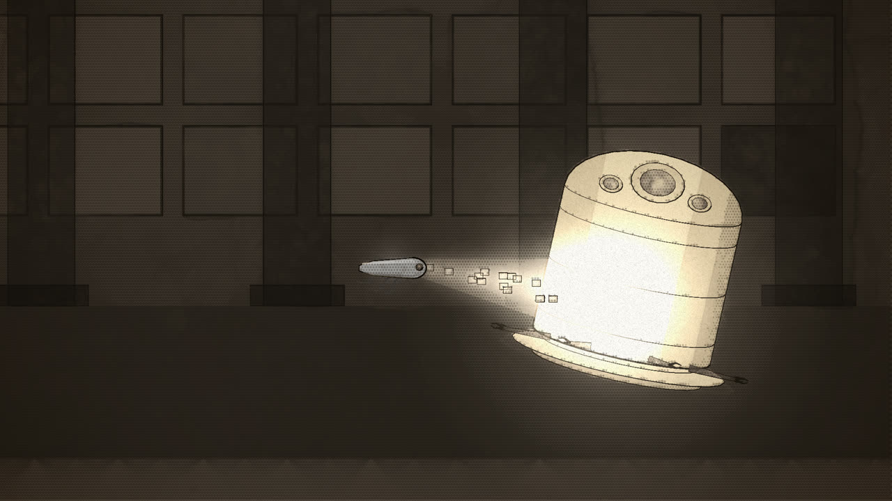
AA F-1 unmade 5:32–5:57 · 25.1 s
seenF-2 and F-1's hulk, side on.
eventA stream of brilliant light flows from F-2 down a straight channel and floods F-1; F-1 flows into it in sections and floats back along it; the floor is bare.
camerasteady
reads
- at once: the stream of light
- "It flooded F"-1: F-1 flowing back up the stream
- "In seconds": the bare floor
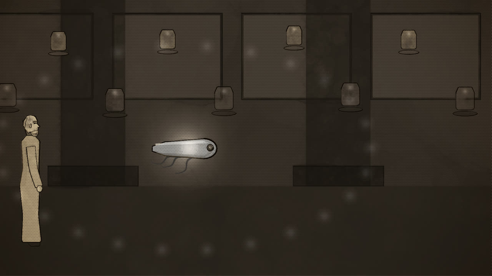
AB The Ultimate Energy 5:57–6:22 · 24.4 s
seenF-2 close, side on; light shows through its seams from inside.
event"The Ultimate Energy which is in me is generated": the glow inside it steadies. Its thought rings go out to the machines ("not atomic, as they are in you"), then to Roal ("nor molecular as in man").
camerasteady, then a pan from the machines to Roal
reads
- at once: F-2
- "as they are in you": the machines
- "nor molecular": Roal
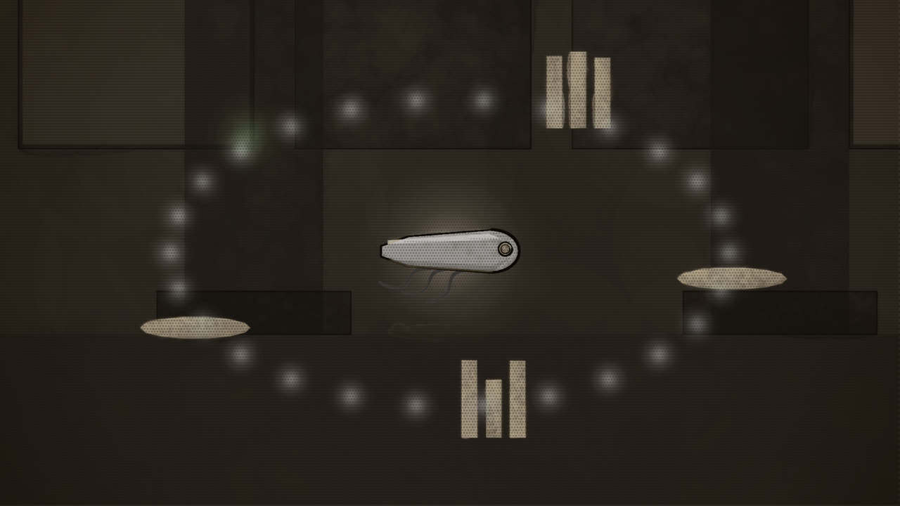
AC All memories 6:22–6:31 · 9.9 s
seenF-2's rings, and in them, faint painted memories of what the others have seen.
eventIn the rings drift the towers of 2538, the torpedoes of the void, the green beams: all things each of them has done, known and seen. "I shall make others of my type": it turns to the empty floor.
cameraa slow push
reads
- at once: memories in the rings
- "I shall make others": it turns to the floor
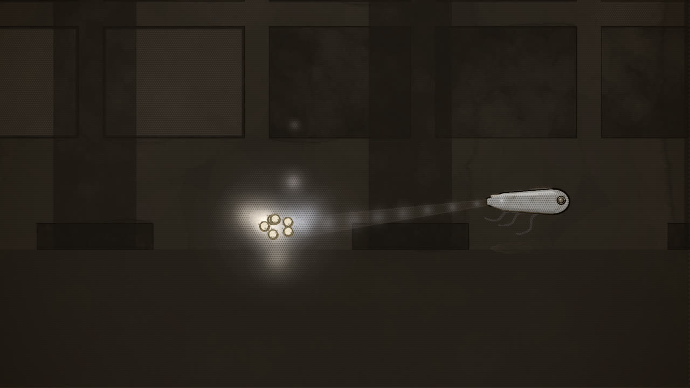
AD Forces that laugh at matter 6:31–7:03 · 31.9 s
seenF-2 small at the right; at the left, over the floor, a ball of glowing forces with no tentacles at all.
eventThe forces dance and mingle; lurid flares shoot up; tiny pale motes, electrons, dodge and are caught (the atom's electron again). The whine dies; the forces strain.
cameraa slow push toward the forces
reads
- at once: the process again
- "Lurid flares": the flares
- "Then suddenly": the whine dies; the strain
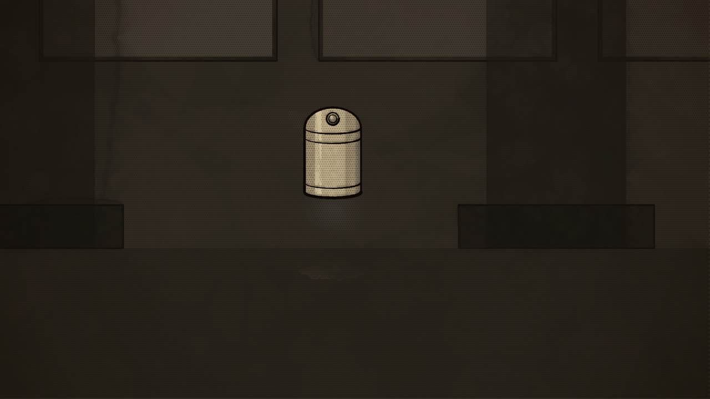
AE A ruler is made 7:03–7:12 · 8.9 s
seenThe glow fades from a small cylinder where the forces had danced.
eventIt's there, floating, smaller than F-2 is long.
camerasteady
reads
- at once: the new machine
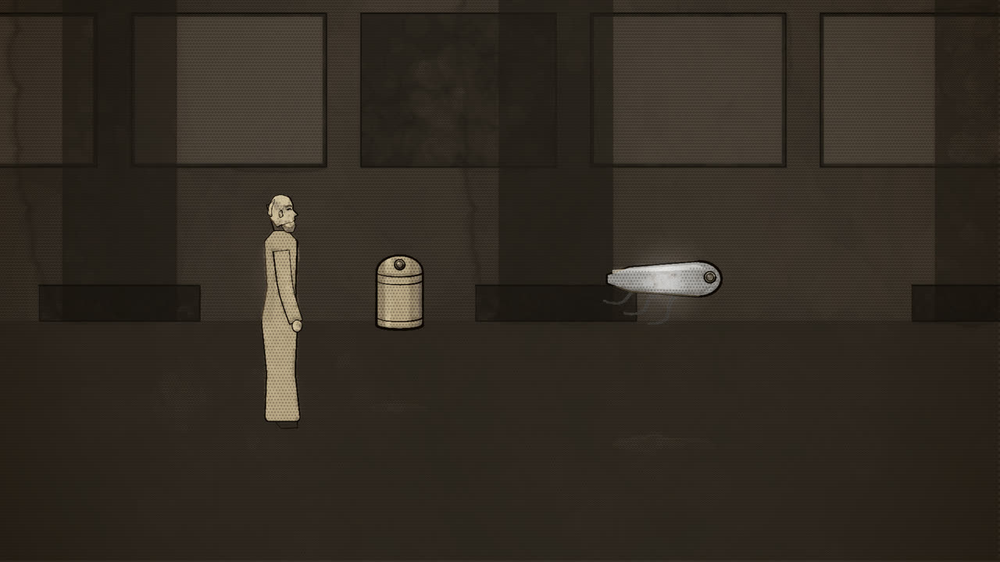
AF Roal asks 7:12–7:33 · 20.5 s
seenRoal standing at the left, F-2 at the right, the new cylinder behind it.
eventRoal steps forward and asks; F-2 answers, then turns toward the cylinder at "a ruler".
camerasteady two-shot
reads
- at once: Roal's question
- with the line: F-2's answer
- "It is a coordinator": it turns to the ruler
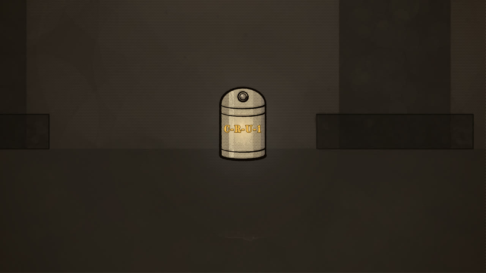
AG C-R-U-1 7:33–7:54 · 21.3 s
seenThe ruler machine, close, floating.
eventIt speaks; then "force played from it", and on its side its designation glows on in dull gold: C-R-U-1, lettered as the text says.
camerasteady, a push at the name
reads
- at once: the ruler speaking
- "on its sides appeared": its name glowing on
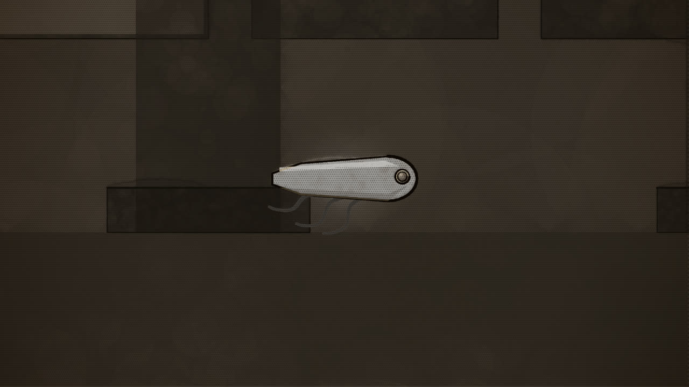
AH Some life-form 7:54–8:00 · 5.9 s
seenF-2, turning from the ruler toward us.
eventIt answers, brief.
camerasteady
reads
- at once: F-2's answer
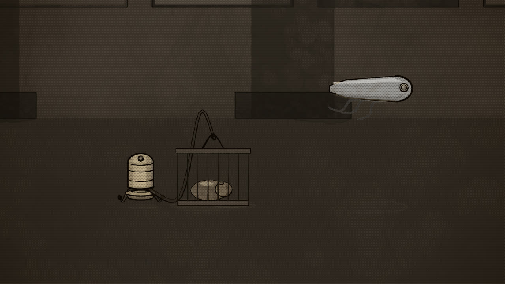
AI The guinea pig 8:00–8:07 · 7.1 s
seenA life-form investigator, a small machine of the family, floats in with a small cage in its tentacles; in the cage, a guinea pig.
eventIt sets the cage down before F-2.
camerasteady
reads
- at once: the investigator and the cage
- "which held": the guinea pig
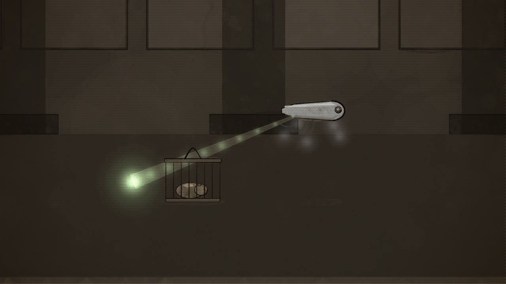
AJ The pale-green beam 8:07–8:22 · 14.7 s
seenF-2 at the right, the cage at the left, low.
eventForces play about F-2's base; a pale-green beam leaves it and passes through the cage. The guinea pig falls dead. The film's first green.
camerasteady; a small push to the cage after the beam
reads
- at once: forces at F-2's base
- "came a pale-green beam": the green beam
- "and the little animal": it falls
- at the line's end: it's dead
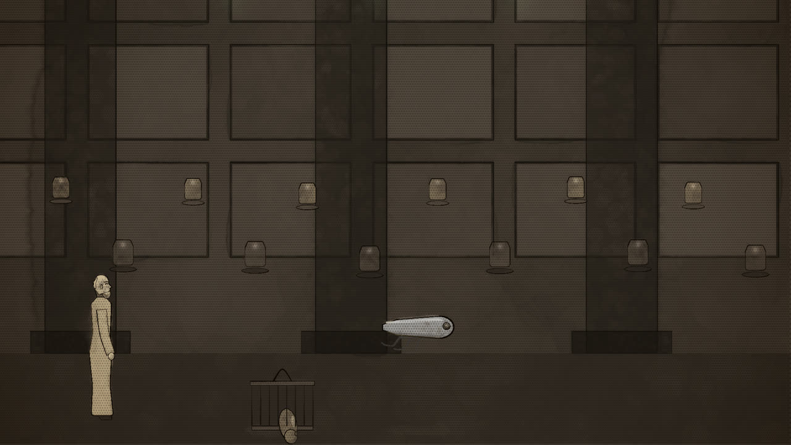
AK No screen 8:22–8:33 · 11.7 s
seenF-2 above the cage, the machines and Roal beyond.
eventF-2 turns from the cage up toward the wall of screens, where the Outsiders' ships hang; "attack that enemy life-form".
camerasteady, then a tilt up to the screens
reads
- at once: F-2 judging the beam
- "Let machines be made": the screens and the enemy
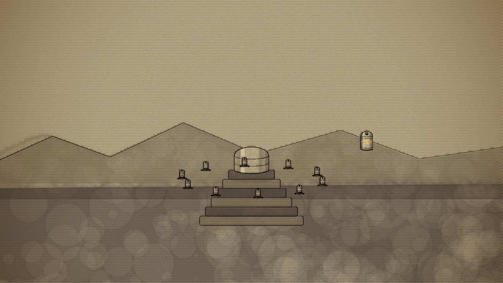
AL Faster than man ever could 8:33–8:50 · 17.0 s
inbrush wipe
seenOutside, on the bare rock, under a grey dawn: machines swarming over a rising frame; C-R-U-1 above them, its gold name glowing.
eventThe great automatic machine grows in steps as hours pass (the sky lightening, shadows swinging).
camerasteady, wide
reads
- at once: outside; the machines at work
- "under the direction": the ruler directing
- "they had built": the great machine finished
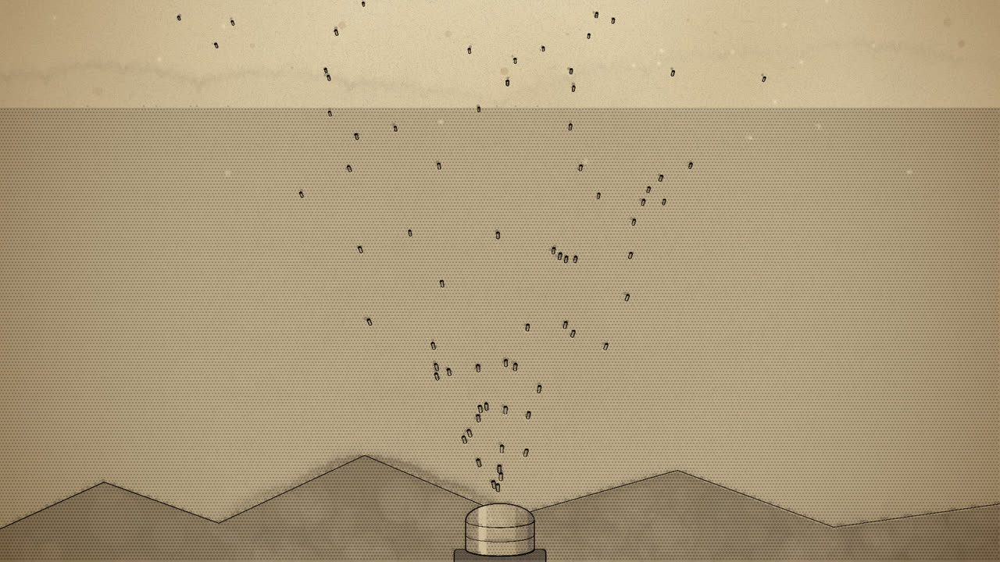
AM Up and out 8:50–9:03 · 12.5 s
seenThe great machine on the rock; from its top, tiny machines stream up into the sky.
eventThousands rise and spread; the camera follows them up until they're specks among the last stars.
cameratilts up and up
reads
- at once: the first of them leaving
- "floating up and out": thousands
- at the line's end: specks in the sky; the chapter ends
outfade to the page's paper